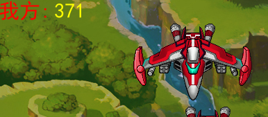

积分系统
用于飞机大战中击毁敌军获得的积分计数
新建一个函数
- 这个函数用于绘制字体使用，达到一个复用的效果，这里把函数写在了 jingling.py 文件里面，自己写在哪都可以。
jingling.py
# 积分系统
def jf_text(name, color):
# 传入一个名称和颜色，返回一个字体对象，用于绘制
f = pygame.font.Font("C:/Windows/Fonts/simhei.ttf", 30)
return f.render(name, True, color)
- 在 main.py文件中调用这个函数
- 创建 “我方”和分数
from jingling import Hero, Enemy, jf_text # 导入英雄模型类,敌人类，积分系统
...
# 创建 “我方：”字眼，放在 y0x0的位置
me = jf_text("我方:", "red")
number = 0 # 分数
...
# 循环主体
while True:
...
# 绘制积分
fs = jf_text(str(number), "yellow")
screen.blit(me, (0,0)) # 我方：
screen.blit(fs, (80,0)) # 分数
number += 1 #积分自增

》 如何做一个摧毁敌人就增加积分呢？这个挑战留给你们吧。
》 还有敌人发射子弹，发射大招，音效这些很简单，自己试试吧。